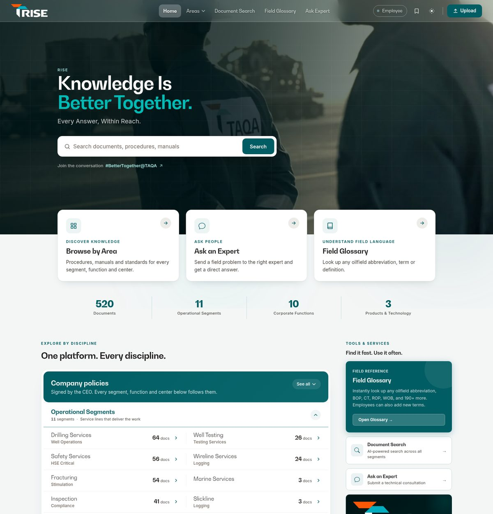
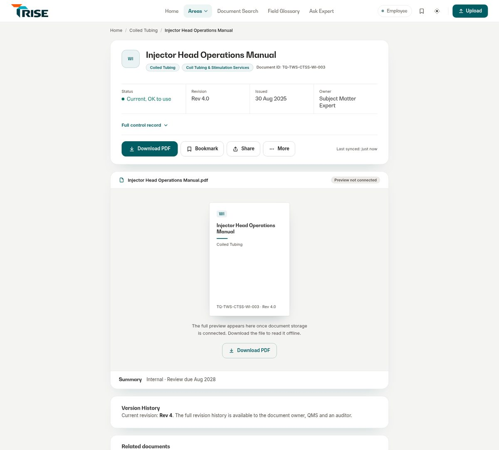
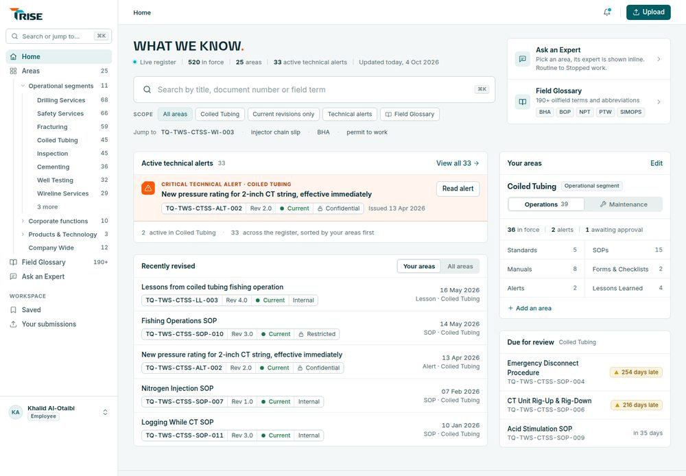
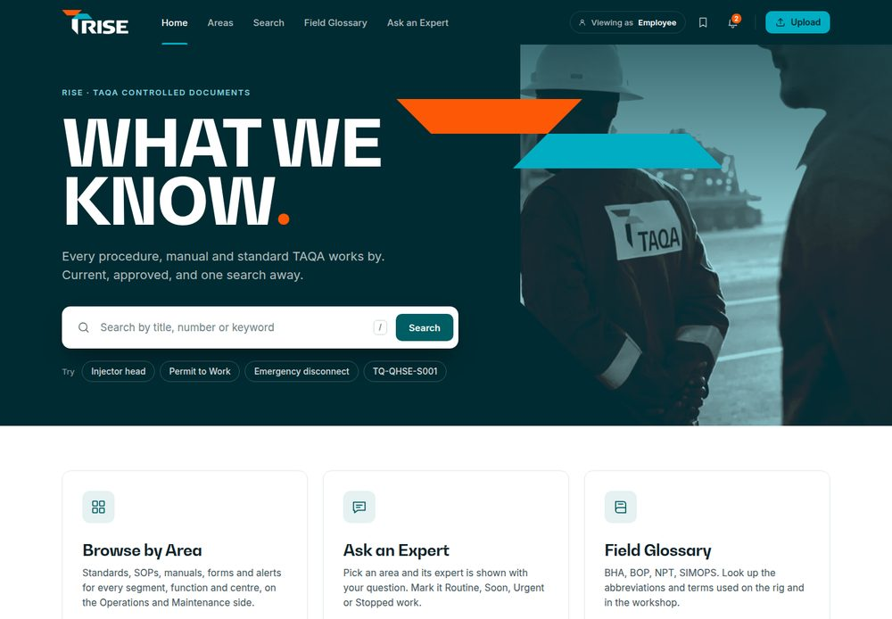
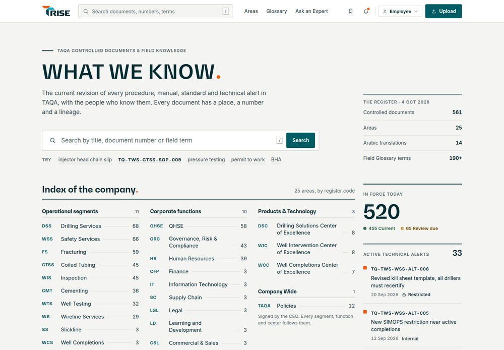

Where RISE is today
Live product, 4 Oct 2026The product works and the workflows are sound. What holds it back from feeling premium is that its pages were designed one at a time, so the brand, the page headers and even the document itself look different from screen to screen.
RISE's own line is not the headline
Home leads with "Knowledge Is Better Together." over a full-bleed photo. RISE appears as a small eyebrow, and WHAT WE KNOW. only shows up in a brand card further down and in the footer. The product doesn't introduce itself.
On a phone the hero fills the first screen, so the ways in start below the fold.

Home today, desktop (Employee). Opens full size.
Six page-header patterns in one product
Photo heroes on Home, the area pages and Upload; a dark control panel on the Director desk; a teal banner with donut charts on the Master List; a centred "Ask Anything" hero on Search; a white card on the viewer; a dark hero on the Field Glossary.
Each is reasonable alone. Together they read as several products, which is the main reason it feels like an intranet.
The document has no single identity
The same document is an icon-badge row in an area, a monospace table row in the Master List, a card with a bar in Search and a line of activity on the desk. On the viewer the number sits in small grey text as "Document ID", and the approval trail and revision history are folded behind "Full control record".
For controlled documents, the number, revision, status and approver should read the same everywhere. All three directions fix this with one identity line.

Viewer today: TQ-TWS-CTSS-WI-003 as an Employee.
Leftover motion works against trust
The home figures count up from zero. My first capture read "107 Documents" and "478 in force" before they settled at 520: for a few seconds the page shows numbers that are not true. The hero photo also zooms on an 18-second loop, blurred colour blobs drift behind the page, and every page change fades with a 0.9-second progress bar.
Worth keeping in any direction
- One top bar on every page (since 28 Sep) and role-aware navigation.
- Compact document rows, and the Master List's density and status words.
- BW Gradual and Inter, already self-hosted.
- Plain-language states: "Current, OK to use", "254 days late", separation-of-duties reasons.
- Every workflow: revisions keep their number, QMS before the final approver, held-back items explained.
What happened to the animated landing page
From git historyAnimated counters, a glowing pulse on the Manage Segment button, tab transitions.
Hero reworked around #BetterTogether@TAQA: a full-viewport photo with a slow Ken Burns zoom and a word-by-word headline.
Master List: glass surfaces, donuts that draw in, figures that count up.
The "focus" layout became Home: three cards on a sheet of real glass over animated colour blobs. Choosing one rearranged them with a FLIP animation and glided an areas panel open. This is the animated landing experience.
"Layout redesign: one top bar, compact lists, document first." The doors layout was replaced with a compact Explore list and the hero cut to half height, so search and documents came first. The animation went with the layout, by design.
Hero height restored, then shortened again in the TechHub redesign; the slogan returned; the RISE rebrand landed.
What I propose
- Don't bring back the glass doors or the FLIP layout. They were removed for a good reason: they put a show between people and their document.
- Remove the leftovers: the count-up (a figure must be true the moment it is visible), the looping photo zoom, the drifting blobs, and the fade and progress bar on every page change.
- Keep motion for state: 120–240 ms ease-out on hover, focus, selection, tabs, drawers and sheets; skeleton rows only when data takes over 300 ms; transform and opacity only.
- At most one brand moment: the logo's two chamfered bars settle into place on the first Home visit of a session, in under 700 ms, with search usable from the first frame. Direction B draws it; A and C leave it out. It is optional in any direction.
- Nothing loops.
prefers-reduced-motionturns everything off.
One RISE visual system
Shared by all three directionsThe structure below is fixed. The directions differ in how they express it: layout model, density, surfaces, type scale and how they use the brand's shapes. Each direction's system sheet draws every component listed here.
| Part | The rule |
|---|---|
| Type | Three roles. Display in BW Gradual for names and page titles. Text in Inter for reading and UI, 15–16px. Data with tabular figures for numbers, revisions, dates and counts. Seven steps at most. |
| Spacing | 4px base: 4 · 8 · 12 · 16 · 24 · 32 · 48 · 64 · 96. |
| Widths and grid | Desktop at 1440, content 1200–1320, 12 columns, 24px gutter. Reading column 680–760px. Phone at 390 with 16–20px gutters and 44px minimum touch targets. |
| Navigation | Home, Areas, Search, Field Glossary, Ask an Expert for everyone. Master List and Workspace for QMS, Directors, Maintenance Managers and auditors. Upload is the one primary action, for roles that file. Role, bookmarks and notifications sit at the end of the bar. |
| The identity line | TQ-TWS-CTSS-WI-003 · Rev 4.0 · ● Current · Internal. One component, identical on rows, the viewer, the QMS queue and the phone. Field crews read numbers over the radio, so it is always legible and exact. |
| Status |
Current Review due Draft · In QMS check · Awaiting final approval Returned Superseded · Obsolete Always a word plus a shape, never colour alone. Superseded and Obsolete are muted, never hidden. Restricted and Confidential carry a lock. Status colours are separate from the brand accent. |
| Approval trail | Filed → QMS check → Final approval → Current. The final approver is named: the Segment Director for Operations, the segment's Maintenance Manager for Maintenance, the CEO for policies. Filer, QMS checker and final approver are three different people, and a held-back item says why. |
| Components | Buttons (primary, secondary, quiet, danger; default, hover, focus, disabled), document rows, tables, forms (fields, selects, radio cards, file drop), drawers and bottom sheets, alerts (info, warning, critical technical alert), empty states and skeletons, one line-icon set, and one depth model per direction. |
| Colour | The logo's own palette: ink #002B32, pillar teal #013F4E, cyan #00ADC2, orange #FD5805, plus TAQA's product teal #005D63 for actions. Orange is for the full stop and critical alerts only, never for body text. |
| Motion | As proposed above: state feedback only, 120–240 ms, nothing loops, at most one brand entrance. |
| Access | WCAG AA contrast, a visible focus ring everywhere, 16px minimum body text on the phone, status readable without colour. |
Compare one screen across directions
Same content, three designs


Thumbnails show the top of each screen. "Full size" opens the whole screenshot; clicking a thumbnail opens the live HTML mockup.
Direction A
Instrument
RISE as a precision instrument for controlled knowledge, with the calm density of the best modern software tools. An app shell with a persistent sidebar, hairline borders and no shadows, Inter for the work and BW Gradual for names. The register is the hero, and the brand is small and exact.
Why it fits RISE
Trust here is a data problem: the number, revision, status and approver need to be seen at once, and A puts them in one crisp token. Document control is dense work, and a split-view app shell is its native form.
How it scales to QMS
Best of the three. The QMS queue, a Director's desk, a Maintenance Manager's desk and an audit trail all use the same split view (queue, check panel, routing, keyboard actions) with no new parts. The register-health strip becomes the Master List header.
Strengths
- Fastest to scan: 46px rows, the identity line becomes the table's first four columns.
- Identical layout on every page; only the Workspace group changes by role.
- Keyboard first: ⌘K to any number or term; Confirm, Return, Next from the keyboard.
Weaknesses
- Least emotional brand expression. No photography, no hero.
- A permanent sidebar is heavier than a top bar for an occasional field user on desktop.
- It depends on discipline: one careless shadow or oversized card and it looks like generic SaaS.
Motion
No brand entrance on any visit. Hover and selection 150 ms; inspector and drawer slide 200 ms (the only element with a shadow); ⌘K palette 120 ms; one skeleton sweep only if data takes longer than 300 ms; the live dot never pulses.
Direction B
Flagship
RISE as TAQA's flagship knowledge product, with the restraint of a premium product page or a top-tier annual report. A deep ink top bar and identity bands give every page weight; WHAT WE KNOW. is set large with the orange full stop; white work surfaces take over straight after. The brand leads and the content follows.
Why it fits RISE
Trust as a brand promise. The viewer's ink band works like a document's title page: identity line, then "Approved 28 Aug 2025 by Segment Director, Coiled Tubing" in white, before any scrolling. It gives 5,000 people a product to be proud of.
How it scales to QMS
Good, with a density switch. The band carries the queue's state (12 waiting, 6 days oldest, 1 held back) and the queue expands inline. Master List and audit screens would need a compact 56px row token so the flagship scale stays for reading.
Strengths
- Strongest brand presence and the most premium first impression.
- One big idea per screen: the statement, the area, the title, the routing sentence.
- A very small system: two grounds, one shadow, one chamfer per page.
Weaknesses
- Lowest density: about nine SOP rows per screen.
- Ink bands cost 280–360px on every work screen (they could collapse to a sticky strip on scroll).
- Photography needs curation, and if the Home treatment spreads it starts to feel like a marketing site. It is also the closest to today's look.
Motion
One entrance on the first Home visit of a session: the two chamfered bars slide in 400 ms and the statement fades up 300 ms, under 700 ms in total, with search typeable from the first frame. Page change 180 ms with the band held still; tile hover lifts 2px in 200 ms; sheets slide 240 ms. No Ken Burns, no loops.
Direction C
Atlas
RISE as TAQA's reference library, closer to a technical publisher or a standards body than a dashboard. Structure is the interface: every document has a place, a code and a lineage, and the design makes them visible. White sheets on a light Monument-grey ground, register codes as typographic landmarks, the logo's 45° cut on document sheets and the orange full stop on display headings.
Why it fits RISE
RISE exists to answer "is this the revision I can use, and who approved it?". Atlas answers with the document itself: a sheet, a printed-style status stamp, a lineage of approvals and revisions. Crews already think in codes (CTSS, SOP, WI), so finding your way and learning the numbering system become the same thing.
How it scales to QMS
Well, by switching patterns rather than styles. The QMS queue is a ledger with ages and type codes; each control check cites its clause (TQ-QHSE-S001 §5.3, rule D1), which suits audits. For heavy triage it should adopt A's 44px compact rows and split view.
Strengths
- Best reading and trust experience: the document reads like a document, status reads like a stamp.
- Makes document control understandable to everyone, not only QMS.
- Distinctive without being loud: no photos, gradients or decoration, three deliberate signatures.
Weaknesses
- A quieter brand moment than B; the first impression rests on typography.
- Catalogue entries are about 115px tall, so it is less dense than A for triage.
- It relies on very careful typography and spacing. Done carelessly, it looks plain.
Motion
No entrance animation. Links, rows and buttons change in 160 ms; the document sheet fades in over 200 ms when the preview loads; the contents marker follows the reading position; search results update in place without a layout jump; drawers slide 200 ms.
Side by side
| A · Instrument | B · Flagship | C · Atlas | |
|---|---|---|---|
| Character | Precise software tool | Confident corporate flagship | Authoritative reference library |
| Layout model | App shell, left sidebar | Top bar, ink identity bands | Light top bar, index pages, document sheets |
| Density | High (46px rows) | Low (88px rows) | Medium (catalogue entries; ledgers for QMS) |
| Brand moment | Small: lockup, WHAT WE KNOW. title | Large: 104px statement, duotone photo, chamfer bars | Typographic: masthead, codes, full stops, chamfered sheets |
| Field user finding a procedure | Fast, if they know the sidebar | Fast from Home, slower on long lists | Fast, and they learn the structure as they go |
| Trust at a glance | Strong: identity token everywhere | Strong: band reads like a title page | Strongest: sheet, stamp and lineage |
| QMS and audit screens | Strongest | Needs a compact mode | Good; borrow A's compact split view |
| Phone | Bottom tab bar, dense | Ink header, generous | Identity first, calm |
| Risk | Looks generic if executed carelessly | Drifts toward a marketing site | Looks plain if typography slips |
| Change from today | Large (new shell) | Small to medium | Medium |
Recommendation
Build RISE on Atlas, with Instrument's workspaces
Most of RISE's 5,000 users come to read one document and confirm it is the right one. Atlas serves that moment best, gives RISE an identity no other TAQA tool has, and does it with type and structure rather than decoration, which is the restraint you asked for. Its weak spot is heavy triage, and Instrument has already solved that with the same identity line and status language, so the two fit together without a seam.
- Foundation: C · Atlas. Home, Areas, Browse, the document viewer, Search, Field Glossary, Ask an Expert and Upload.
- Workspaces: A · Instrument's patterns in Atlas's styling. The QMS queue, Master List, Director and Maintenance Manager desks and the audit view use A's 44px compact ledger rows, split view and keyboard actions.
- Motion: Atlas's quiet set. Remove the count-up, photo loop, blobs and page fades. Flagship's brand entrance stays an option to decide later, not a default.
- From B, keep one idea: the viewer states "Approved 28 Aug 2025 by Segment Director, Coiled Tubing" in the first screen, which Atlas already does with its stamp.
If brand impact matters more to you than reading and density, B is the right pick, and it is the smallest change from today. I'd choose A only if RISE becomes mainly a document-control tool for QMS and managers.
What I need from you
Nothing is implemented until you approve1 · Pick a direction
A, B, C, or the recommended C with A's workspaces. Point at anything you want carried across from another direction.
2 · Decide the brand moment
Keep RISE quiet (no entrance), or allow B's one-time chamfer-bar entrance on Home, under 700 ms, once per session.
3 · Then I plan the build
Once you approve, I'll write an implementation plan: tokens and components first, then page by page behind the existing tests, keeping every workflow and business rule. No code before that plan is approved.